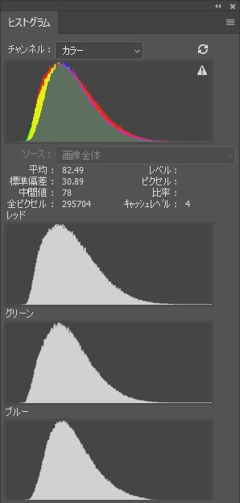

<!DOCTYPE html>
<html>

<head><meta name="generator" content="Hexo 3.8.0">
  <meta charset="utf-8">
  
  <title>【遠征記】2019年9月 富士宮口五合目（星ナビ入選） | ほしよみ大学生のブログ</title>
  <meta name="viewport" content="width=device-width">
  <meta name="description" content="あいさつこんにちは．今回は9月に行った五合目への遠征と，撮影したものについて簡単に書いておきます．">
<meta name="keywords" content="写真,天体写真,遠征記">
<meta property="og:type" content="article">
<meta property="og:title" content="【遠征記】2019年9月 富士宮口五合目（星ナビ入選）">
<meta property="og:url" content="http://dabokun.github.io/2019/12/05/00000027-2019-09-26-fuji5th/index.html">
<meta property="og:site_name" content="ほしよみ大学生のブログ">
<meta property="og:description" content="あいさつこんにちは．今回は9月に行った五合目への遠征と，撮影したものについて簡単に書いておきます．">
<meta property="og:locale" content="ja">
<meta property="og:image" content="http://dabokun.github.io/2019/12/05/00000027-2019-09-26-fuji5th/card.jpg">
<meta property="og:updated_time" content="2019-12-05T09:42:49.139Z">
<meta name="twitter:card" content="summary_large_image">
<meta name="twitter:title" content="【遠征記】2019年9月 富士宮口五合目（星ナビ入選）">
<meta name="twitter:description" content="あいさつこんにちは．今回は9月に行った五合目への遠征と，撮影したものについて簡単に書いておきます．">
<meta name="twitter:image" content="http://dabokun.github.io/2019/12/05/00000027-2019-09-26-fuji5th/card.jpg">
<meta name="twitter:creator" content="@dabo_pic">
  
  <link rel="alternative" href="/atom.xml" title="ほしよみ大学生のブログ" type="application/atom+xml">
  
  
  <link rel="icon" href="/images/favicon.png">
  
  <link rel="stylesheet" href="/css/style.css">
  <!--[if lt IE 9]><script src="//html5shiv.googlecode.com/svn/trunk/html5.js"></script><![endif]-->
  
</head></html>
<body>
  <div id="container">
    <div class="mobile-nav-panel">
	<i class="icon-reorder icon-large"></i>
</div>
<header id="header">
	<h1 class="blog-title">
		<a href="/">ほしよみ大学生のブログ</a>
	</h1>
	<nav class="nav">
		<ul>
			<li><a href="/">Home</a></li><li><a href="/categories">Categories</a></li><li><a href="/tags">Tags</a></li><li><a href="/archives">Archives</a></li><li><a href="/about">About</a></li><li><a href="/work">Work</a></li>
			<li><a id="nav-search-btn" class="nav-icon" title="Search"></a></li>
			<li><a href="https://github.com/dabokun"></a>
			</li>
			<li><a href="https://twitter.com/dabo_pic"></a></li>
			<li><a href="/atom.xml" id="nav-rss-link" class="nav-icon" title="RSS Feed"></a>
			</li>
		</ul>
	</nav>
	<div id="search-form-wrap">
		<form action="//google.com/search" method="get" accept-charset="UTF-8" class="search-form"><input type="search" name="q" class="search-form-input" placeholder="Search"><button type="submit" class="search-form-submit">&#xF002;</button><input type="hidden" name="sitesearch" value="http://dabokun.github.io"></form>
	</div>
</header>
    <div id="main">
      <article id="post-00000027-2019-09-26-fuji5th" class="post">
	<footer class="entry-meta-header">
		<span class="meta-elements date">
			<a href="/2019/12/05/00000027-2019-09-26-fuji5th/" class="article-date">
  <time datetime="2019-12-05T05:45:21.000Z" itemprop="datePublished">2019-12-05</time>
</a>
		</span>
		<span class="meta-elements author">astr0dab0</span>
		<div class="commentscount">
			
			<a href="http://dabokun.github.io/2019/12/05/00000027-2019-09-26-fuji5th/#disqus_thread" class="article-comment-link">Comments</a>
			
		</div>
	</footer>
	
	<header class="entry-header">
		
  
    <h1 class="article-title entry-title" itemprop="name">
      【遠征記】2019年9月 富士宮口五合目（星ナビ入選）
    </h1>
  

	</header>
	<div class="entry-content">
		
		
		<div id="toc" class="toc-article">
			<p class="toc-title">目次</p>
			<ol class="toc"><li class="toc-item toc-level-3"><a class="toc-link" href="#あいさつ"><span class="toc-number">1.</span> <span class="toc-text">あいさつ</span></a></li><li class="toc-item toc-level-3"><a class="toc-link" href="#大学から五合目へ"><span class="toc-number">2.</span> <span class="toc-text">大学から五合目へ</span></a></li><li class="toc-item toc-level-3"><a class="toc-link" href="#掲載作品"><span class="toc-number">3.</span> <span class="toc-text">掲載作品</span></a></li><li class="toc-item toc-level-3"><a class="toc-link" href="#後輩ちゃんも入選"><span class="toc-number">4.</span> <span class="toc-text">後輩ちゃんも入選</span></a></li></ol>
		</div>
		
		<h3 id="あいさつ"><a href="#あいさつ" class="headerlink" title="あいさつ"></a>あいさつ</h3><p>こんにちは．今回は9月に行った五合目への遠征と，撮影したものについて簡単に書いておきます．</p>
<a id="more"></a>
<h3 id="大学から五合目へ"><a href="#大学から五合目へ" class="headerlink" title="大学から五合目へ"></a>大学から五合目へ</h3><p>その日は平日だったので車で大学に行き，夕方まであったゼミを終えてから後輩3人を連れて五合目へ出発しました．直接東名には乗らず，第三京浜から東名へ行くルートを選択しましたが渋滞もあったので結果は微妙．もしかしたら直接東名を走ったほうが早かったかも…．海老名SAで夕飯を済ませ，途中コンビニに寄りつつ五合目へ直行しました．<br>当日の天気はあまり良い予報ではなく，下層にのみ雲が出現することを期待して五合目へ行ったわけですが，道中は霧も出ておらず，「うーん，コレは今日はダメかもしれんねえ」などと後輩と話しておりました．にしても五合目までには鹿が多いですね．天城より多いんじゃないでしょうか？<br>到着してみると，「あれ？少し晴れてる」<br>後輩らはすぐに機材の展開をはじめましたが自分は特にやる気もなかったのでしばらく車中でぬくぬく．<br>日付が変わって0時くらいになってみると，「あれ？めっちゃ晴れてね？」「誰だよダメかもしれんとか言ったヤツ」<br>南は御殿場の明かりで厳しいのはともかく，北の高いところがものすごい．もしかしたら山梨側は低層に雲があったのかもしれません．自分もやる気が出てきたのですぐに機材を展開して撮影開始．<br>その後は北には雲もなく，4時間弱露光できまして，先日星ナビに投げたところ2020年1月号に掲載されました．</p>
<h3 id="掲載作品"><a href="#掲載作品" class="headerlink" title="掲載作品"></a>掲載作品</h3><p>掲載されたのは以下の写真になります．</p>
<p></p>
<div style="text-align: center;">
”Beloved, Pacman”
2019年9月27日 午前0時27分 静岡県富士宮口五合目にて
SIGMA 135mm F1.8 DG HSM Art (F2.8)
Canon EOS 6D
ISO 2000 / 240s \* 55 + 210s \* 2 = 227 min
タカハシ EM-11 Temma2Jr. ノータッチガイド
ステライメージ8 / Adobe Lightroom CC / Photoshop CC
月刊 星ナビ2020年1月号 掲載<br>
</div>

<p>編集過程でのヒストグラムも載せてみます．<br><br>滑らかでいい感じでは？これを見て，今回はイケる！と思いました．</p>
<p>星ナビには「みんな大好き」と書きましたが，”Beloved” にはどちらかというと「愛しの」という意味を込めました．雑誌コメントに「愛しの」と書くのはちょっと恥ずかしいので，「みんな大好き」と言葉を濁したわけです笑．パックマンも好きですが，天の川の中をさっとハケで掃いたような暗黒帯がとても美しく，気に入っています．<br>私の作品の下には<a href="https://nakacyg.com/" target="_blank" rel="noopener">nakacyg 氏</a>の<a href="https://www.astrobin.com/mp5xvr/?nc=user" target="_blank" rel="noopener">渾身の40mm作品</a>が掲載されています．私が本作品を撮ろうと思ったのは，この作品の天の川からそうでないところ（アンドロメダ方向）へ向かうグラデーションがとても美しいと思ったことがきっかけなので，星ナビさんには私の意を汲んでくれてありがたい限りです．「構図が斬新」とのコメントも頂きました，ありがとうございます（確かに135mmではあまり見ない構図ですね）．AstroBinでIOTDをとった作品と並べられてとても光栄であり恐れ多くもありますが，私の作品の荒が目立ってしまってなんとも恥ずかしい気持ちもあります(汗)．</p>
<p>遠征はその後，何事もなくささっと帰りました！明け方，車内で爆睡していたところスターベースの某S店員（私の先輩です．たまたま？五合目に来ていたっぽい．）にいきなり窓を叩かれ、「やぁ！」と声をかけられました．心臓が止まりました．とても驚きましたが，会えて嬉しかったです．</p>
<h3 id="後輩ちゃんも入選"><a href="#後輩ちゃんも入選" class="headerlink" title="後輩ちゃんも入選"></a>後輩ちゃんも入選</h3><p>もう一つ，嬉しいことが．昨年五合目に行った際，サークルの<a href="https://twitter.com/hahe_0131" target="_blank" rel="noopener">後輩ちゃん</a>に自分のカメラ以外の機材を丸投げしてオリオン周辺を撮らせてあげたのですが，その作品が見事天文ガイド2020年1月号に掲載されました！正直自分の作品よりもこっちのほうが嬉しい．彼女とは誕生日が1月同日という関係もあり，見事誕生月号にダブル入選を果たしたということになりますね．今年でサークル（天文研究会）を引退するので，お疲れ様の意も込めて，良い餞になったのではないでしょうか．本人の許可を頂いて，以下に作品を掲載させていただきます．</p>
<p></p>
<div style="text-align: center;">
”冬の主役”
taken by <a href="https://twitter.com/hahe_0131" target="_blank" rel="noopener">はへろろ</a>
2018年10月7日 午前1時55分 静岡県富士宮口五合目にて
SIGMA 135mm F1.8 DG HSM Art (F2.5)
Canon EOS Kiss X9
ISO 800 / WB Auto / 180s * 31 = 93 min
タカハシ EM-11 Temma2Jr. ノータッチガイド
ステライメージ8 / Adobe Lightroom CC / Photoshop CC
月刊 天文ガイド2020年1月号 掲載<br>
</div>

<p>大学の学園祭では出展のための選考に漏れてしまった作品だったので，日の目を見られて良かったですね．</p>
<p>さて，支離滅裂な内容になってしまいましたが，なんだかんだで今年は天文雑誌には写真を4回ほど（3回だったかも？落ちたことは記憶から抹消しているので，よく覚えていません）送って，2回掲載されました．来年以降もまあこんな感じで，天体写真は無理なくのんびりやっていきたいなと思います．<br>年明けには念願の「アレ」も買う予定です．お楽しみに．</p>

		
	</div>
	<footer class="article-footer">
		<a href="https://twitter.com/intent/tweet?text=%E3%80%90%E9%81%A0%E5%BE%81%E8%A8%98%E3%80%912019%E5%B9%B49%E6%9C%88%20%E5%AF%8C%E5%A3%AB%E5%AE%AE%E5%8F%A3%E4%BA%94%E5%90%88%E7%9B%AE%EF%BC%88%E6%98%9F%E3%83%8A%E3%83%93%E5%85%A5%E9%81%B8%EF%BC%89｜%E3%81%BB%E3%81%97%E3%82%88%E3%81%BF%E5%A4%A7%E5%AD%A6%E7%94%9F%E3%81%AE%E3%83%96%E3%83%AD%E3%82%B0&url=http://dabokun.github.io/2019/12/05/00000027-2019-09-26-fuji5th/" class="twitter-share-button" target="_blank" title="Twitter"></a>
		<script async src="https://platform.twitter.com/widgets.js" charset="utf-8"></script>

		<div id="fb-root"></div>
		<script async defer crossorigin="anonymous" src="https://connect.facebook.net/ja_JP/sdk.js#xfbml=1&version=v4.0"></script>
		<div class="fb-share-button" data-href="http://dabokun.github.io/2019/12/05/00000027-2019-09-26-fuji5th/" data-layout="button_count" data-size="small"><a target="_blank" href="https://www.facebook.com/sharer/sharer.php?u=https%3A%2F%2Fdabokun.github.io%2F&amp;src=sdkpreparse" class="fb-xfbml-parse-ignore">シェア</a></div>
	</footer>
	<footer class="entry-footer">
		<div class="entry-meta-footer">
			<span class="category">
				
  <div class="article-category">
    <a class="article-category-link" href="/categories/expedition/">遠征記</a>
  </div>

			</span>
			<span class=" tags">
				
  <ul class="article-tag-list"><li class="article-tag-list-item"><a class="article-tag-list-link" href="/tags/photography/">写真</a></li><li class="article-tag-list-item"><a class="article-tag-list-link" href="/tags/astrophotography/">天体写真</a></li><li class="article-tag-list-item"><a class="article-tag-list-link" href="/tags/expedition/">遠征記</a></li></ul>

			</span>
		</div>
	</footer>
	
	
<nav id="article-nav">
  
    <a href="/2020/01/01/00000028-music-for-today-only-live/" id="article-nav-newer" class="article-nav-link-wrap">
      <strong class="article-nav-caption">Newer</strong>
      <div class="article-nav-title">
        
          【坂本真綾】今日だけの音楽ライブツアーに参加してきました
        
      </div>
    </a>
  
  
    <a href="/2019/11/28/00000026-music-for-today-only/" id="article-nav-older" class="article-nav-link-wrap">
      <strong class="article-nav-caption">Older</strong>
      <div class="article-nav-title">
        
          【坂本真綾】今日だけの音楽を聴いて
        
      </div>
    </a>
  
</nav>

	
</article>


<section id="comments">
	<div id="disqus_thread">
		<noscript>Please enable JavaScript to view the <a href="//disqus.com/?ref_noscript">comments powered by
				Disqus.</a></noscript>
	</div>
</section>

    </div>
    <div class="mb-search">
  <form action="//google.com/search" method="get" accept-charset="utf-8">
    <input type="search" name="q" results="0" placeholder="Search">
    <input type="hidden" name="q" value="site:dabokun.github.io">
  </form>
</div>
<footer id="footer">
	<h1 class="footer-blog-title">
		<a href="/">ほしよみ大学生のブログ</a>
	</h1>
	<span class="copyright">
		&copy; 2020 astr0dab0<br>
		Modify from <a href="http://sanographix.github.io/tumblr/apollo/" target="_blank">Apollo</a> theme, designed by <a href="http://www.sanographix.net/" target="_blank">SANOGRAPHIX.NET</a><br>
		Powered by <a href="http://hexo.io/" target="_blank">Hexo</a>
	</span>
</footer>
    
<script>
  var disqus_shortname = 'astr0dab0';
  
  var disqus_url = 'http://dabokun.github.io/2019/12/05/00000027-2019-09-26-fuji5th/';
  
  (function(){
    var dsq = document.createElement('script');
    dsq.type = 'text/javascript';
    dsq.async = true;
    dsq.src = '//go.disqus.com/embed.js';
    (document.getElementsByTagName('head')[0] || document.getElementsByTagName('body')[0]).appendChild(dsq);
  })();
</script>


<script src="//ajax.googleapis.com/ajax/libs/jquery/2.0.3/jquery.min.js"></script>


<link rel="stylesheet" href="/fancybox/jquery.fancybox.css" media="screen" type="text/css">
<script src="/fancybox/jquery.fancybox.pack.js"></script>


<script src="/js/script.js"></script>
  </div>
</body>
</html>